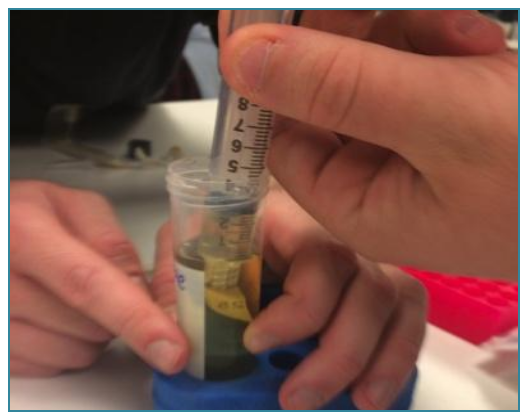
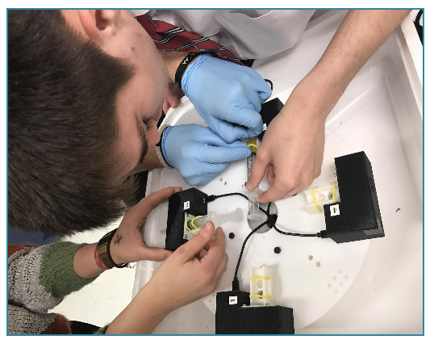
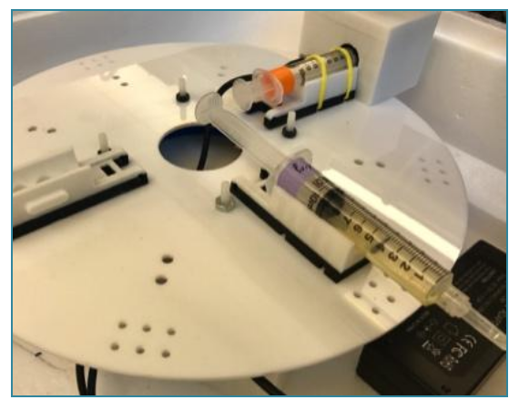
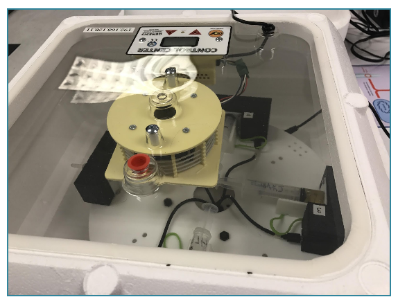

In Fall 2016, we began exploring how synthetic biology—where living cells are genetically modified to generate new characteristics that can be used in practical ways—can be learned in K-12 learning environments. To accomplish this, we developed the biomakerlab device—a low cost mobile lab device that could be used to genetically modify and fabricate (or grow) bacterial or yeast cells. At the same time, we developed lab and accompanying curriculum activities that not only afforded learners a hands-on opportunity to engage with synthetic biology, but also required that they contemplate socioscientific and ethical issues such as the impact biotechnologies like synthetic biology have on society, the environment and ecosystems. All curriculum units involve a fabrication phase where students use the biomakerlab device to fabricate genetically modified cell lines. Each unit then has a unique a research & development phase where students make unique practical uses of newly fabricated cells and present their outcomes using a variety of mediums. The three curricular units we developed include bioLOGO, bioSENSOR and bioCAKES. Below is a summary of the fabrication phase and key outcomes in each curricular unit during the research and development phase.
All curriculum units involve a fabrication phase where students use the biomakerlab device to fabricate genetically modified cell lines. Each unit then has a unique a research & development phase where students make unique practical uses of newly fabricated cells and present their outcomes using a variety of mediums. The three curricular units we developed include bioLOGO, bioSENSOR and bioCAKES. Below is a summary of the fabrication phase and key outcomes in each curricular unit during the research and development phase.
Step 1: Students genetically modify microbial cell lines suing temperature based transformation protocol and load cells into 15ml synringes.
Step 2: Students load syringes into biomakerlab device where fabrication (or cell growth) will occur.
Step 3: The biomakerlab device has a spectrophotometer which can be used to measure cellular growth and a rotating platform which serves as a agitator that supports gas exchange and cell respiration. Both cell growth measures and rate of agitation can be monitored and controlled remotely using a web-based interface controller (https://biomakerlab.github.io/).
Step 4: The biomakerlab device is also equipped with a heat fan that can be controlled remotely and support optimal cellular growth for a variety of microbial cell lines.

Lui, D., Anderson, E., Kafai, Y.B. (2018). Is Making all about Tinkering? A Case Study of High School Students' Activities in Biomaker Workshops.. Proceedings of the Connected Learning Summit.
Walker, J.T., Lui, D., Anderson, E., Kafai, Y.B. (2018). Growing BioSENSORs with biomakerlab. Proceedings of the International Conference of the Learning Sciences.
Walker, J.T., Shaw, M., Kafai, Y.B., Lui, D.A. (2018). Biohacking Food: A Case Study of Science Inquiry and Design Reflections about a Synthetic Biology High School Workshop.. Proceedings of the 2018 International Conference of the Learning Sciences.
Yasmin Kafai, Orkan Telhan, Karen Hogan, Debora Lui, Justice Walker, Emma Anderson & Sheri Hana (2017). Growing Designs with biomakerlab in High School Classrooms. Proceedings of the IDC 17 conference at Stanford university, Palo Alto, CA. 503. DOI: https://doi.org/10.1145/3078072.3084316
Kafai, Y.B., Walker, J.T., Lui, D., Hogan, K., Telhan, O. (2017). Kids as Biodesigners. Global Community Biosummit. MIT, Cambridge, MA.
Lui, D., Walker, J.T., Hanna, S., Hogan, K., Kafai, Y.B., Telhan, O. (2017). Making with Biology: How to Grow Socially Responsive and Creative Designs with bioMAKERlab. Digital Media & Learning. Irvine, CA.
Anderson, E., Lui, D., Walker, J.T., & Kafai, Y.B. (2018). What is a Maker Mindset? Exploring 'Thinking Outside the Box' through E-Textiles and BioDesign Making. AERA. New York, NY.
The biomakerlab device and curriculum activities were developed through University of Pennsylvania collaborations between Yasmin B. Kafai at the Graduate School of Education, Orkan Telhan at the School of Design and Karen M. Hogan at the Department of Biology and made possible through grant support by the National Science Foundation.
Biomakerlab device and accompanying wetlab activities were developed by Orkan Telhan, Karen M. Hogan and Michael Hogan.
bioLOGO, bioSENSOR and bioCAKES curricular units were developed by Justice T. Walker, Debora A. Lui, Emma Anderson, Sheri Hanna, Mia Shaw and Yasmin B. Kafai.
Research on biomakerlab device, associated curriculum activities and learning outcomes was conducted by Yasmin B. Kafai, Debora A. Lui, Justice T. Walker, Emma Anderson, Mia Shaw, Gayithri Jayathirthi, Orkan Telhan and Karen M. Hogan.
Funding for developing the open-sourced biomakerlab device, lab activities and curriculum was provided through a National Science Foundation EAGER grant #1623018 to Yasmin B. Kafai and Orkan Telhan. Any opinions, findings, or conclusions or recommendations expressed in this material are those of the University of Pennsylvania, and do not necessarily reflect the views of the National Science Foundation.